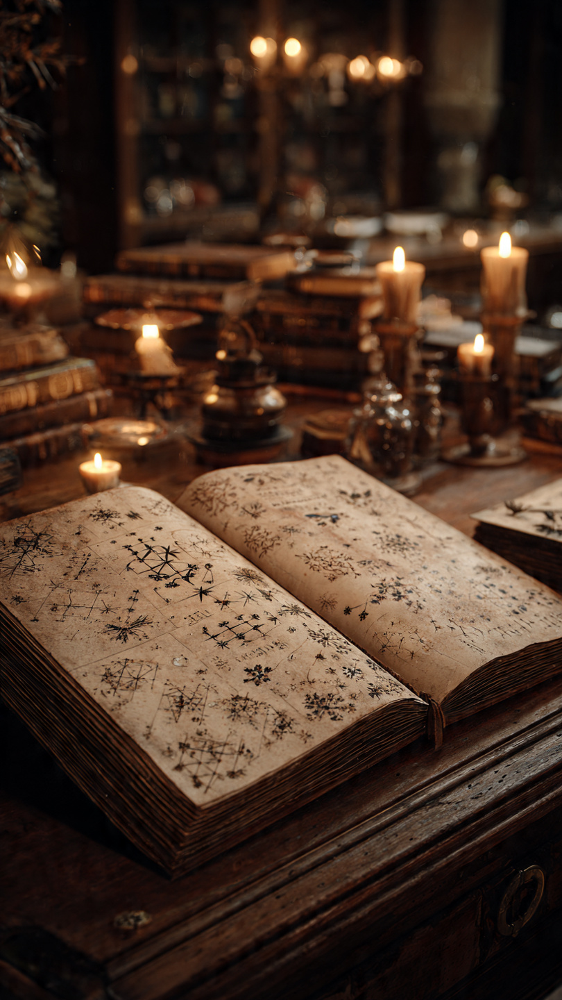

```html id="c6zq4m"
أعظم لغز تاريخي لم يجد له العلماء تفسيرًا | قصص تاريخية
```
منذ آلاف السنين، تركت الحضارات القديمة وراءها آثارًا ونقوشًا وألغازًا ما زال العلماء يحاولون فهمها.
لكن هناك لغزًا واحدًا يختلف عن غيره.
لغز لم يستطع أحد حله بشكل قاطع حتى اليوم.
وهو سر مخطوطة فوينيتش (Voynich Manuscript)، التي يصفها كثيرون بأنها أكثر كتاب غموضًا في التاريخ.
اكتُشفت المخطوطة عام 1912 على يد تاجر الكتب البولندي ويلفريد فوينيتش، الذي اشترى مجموعة من المخطوطات القديمة من إحدى المكتبات في إيطاليا.
وعندما فتح هذا الكتاب، وجد شيئًا لم يره من قبل.
كانت صفحاته مليئة برسومات لنباتات غريبة، ونجوم، ورموز فلكية، ورسوم لأشخاص، إضافة إلى نص مكتوب بلغة أو نظام كتابة لم يتمكن أحد من التعرف عليه.
ولم يكن يشبه أي لغة معروفة في العالم.
بعد سنوات، أظهرت تحاليل الكربون المشع أن صفحات المخطوطة صُنعت في أوائل القرن الخامس عشر، أي قبل أكثر من 600 عام.
لكن ذلك لم يساعد في حل اللغز.
فالكتابة بقيت غير مفهومة، رغم محاولات آلاف الباحثين وعلماء اللغات وخبراء التشفير.
بل حاول بعض أفضل محللي الشفرات في القرن العشرين فك رموزها، لكنهم لم ينجحوا.
ومع مرور الوقت، ظهرت فرضيات كثيرة.
فهل المخطوطة مكتوبة بلغة حقيقية اندثرت؟
أم أنها رسالة مشفرة؟
أم مجرد خدعة متقنة؟
لكن...
لماذا فشل الجميع في قراءة هذا الكتاب حتى اليوم؟
هذا ما سنعرفه في الجزء الثاني.
📷 الصورة رقم 1

منذ اكتشاف مخطوطة فوينيتش، حاول مئات الباحثين فك رموزها.
وشارك في ذلك علماء لغات، وخبراء تشفير، ومؤرخون، وحتى متخصصون عملوا سابقًا في فك الشفرات العسكرية.
لكن جميع المحاولات انتهت دون الوصول إلى تفسير مؤكد.
ولهذا بقيت المخطوطة واحدة من أعظم الألغاز في تاريخ الكتابة.
وتتميز المخطوطة بأن كلماتها تتكرر وفق أنماط تبدو منظمة، وهو ما جعل بعض الباحثين يعتقدون أنها ليست مجموعة عشوائية من الرموز.
كما أن الرسومات الموجودة فيها تنقسم إلى أقسام مختلفة.
فهناك صفحات تحتوي على نباتات لا تشبه أي نبات معروف بشكل واضح.
وصفحات أخرى تضم رسومات فلكية ودوائر تشبه الخرائط السماوية.
كما توجد رسومات لأشكال بشرية داخل أحواض أو قنوات مائية، لكن معناها الحقيقي لا يزال غير معروف.
ومع تطور الحواسيب، استخدم العلماء تقنيات الذكاء الاصطناعي والتحليل الإحصائي لدراسة النص.
وأظهرت بعض الدراسات أن توزيع الكلمات يشبه اللغات الطبيعية أكثر من النصوص العشوائية.
لكن هذا لا يعني أن اللغة قد فُهمت.
فحتى الآن، لم يتمكن أحد من تحديد الأبجدية أو القواعد أو المعاني بدقة.
ولهذا يستمر الجدل بين من يعتقد أنها لغة حقيقية، ومن يظن أنها نظام تشفير، ومن يرى أنها ربما كانت خدعة متقنة.
ورغم مرور أكثر من ستة قرون، ما زالت المخطوطة تثير فضول الباحثين والهواة حول العالم.
وكلما ظهرت تقنية جديدة لتحليل النصوص، عادت الآمال في أن تكشف يومًا أسرار هذا الكتاب الغامض.
لكن...
هل سيتمكن العلماء يومًا من حل لغز مخطوطة فوينيتش؟
وما الذي يجعلها مختلفة عن أي مخطوطة أخرى في التاريخ؟
هذا ما سنعرفه في الجزء الثالث والأخير.
📷 الصورة رقم 2
حتى اليوم، لم يتمكن أي باحث من فك رموز مخطوطة فوينيتش بشكل يحظى بقبول علمي واسع.
فقد أُعلنت خلال السنوات الماضية عدة محاولات ادّعى أصحابها أنهم فهموا النص، لكن هذه التفسيرات لم تصمد أمام المراجعة العلمية، وظلت المخطوطة دون ترجمة مؤكدة.
ولهذا ما زالت تُعد واحدة من أعظم ألغاز التاريخ.
وتحفظ المخطوطة اليوم داخل مكتبة جامعة ييل في الولايات المتحدة، حيث تُدرس باستخدام أحدث التقنيات.
ويستعين الباحثون بالتصوير عالي الدقة، وتحليل الحبر والرق، والذكاء الاصطناعي، في محاولة لفهم طريقة كتابة النص وأصوله.
لكن حتى الآن، لم تكشف هذه الدراسات عن المعنى الحقيقي للكلمات أو هوية مؤلفها.
ويرى بعض العلماء أن قيمة المخطوطة لا تكمن فقط في إمكانية فكها، بل أيضًا في الأسئلة التي تطرحها.
فهي تذكرنا بأن التاريخ لا يزال يخفي أسرارًا كثيرة، وأن بعض الألغاز قد تبقى بلا إجابة لفترات طويلة.
ولهذا تستمر الأبحاث، على أمل أن تقود الاكتشافات المستقبلية إلى حل هذا اللغز الذي حيّر العالم لأكثر من ستة قرون.
وهكذا تبقى مخطوطة فوينيتش واحدة من أكثر الكتب غموضًا في تاريخ البشرية.
كتابٌ مليء بالرموز والرسومات، تحدّى علماء اللغات وخبراء التشفير وأجهزة الحاسوب الحديثة.
وربما يأتي يوم يتمكن فيه أحد الباحثين من قراءة كلماتها لأول مرة، ليكشف سرًا ظل مخفيًا منذ مئات السنين.
📖🔍 انتهت القصة 🔍📖